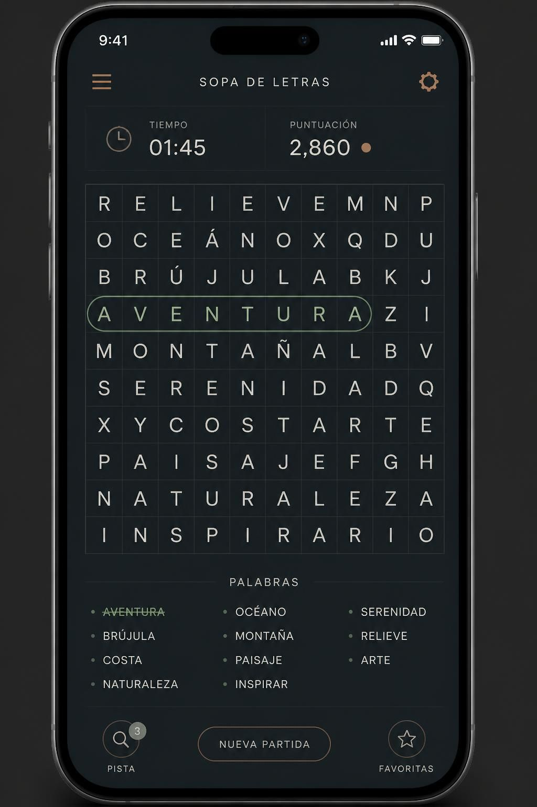
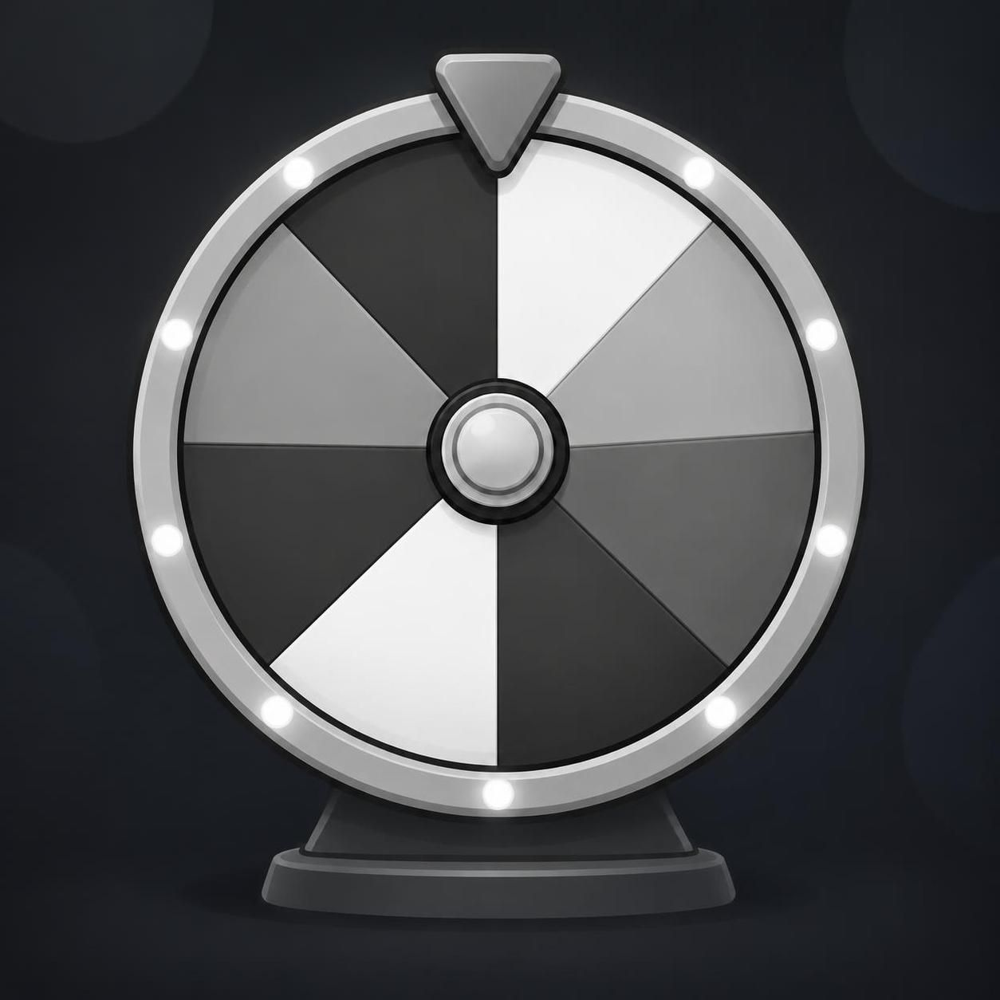
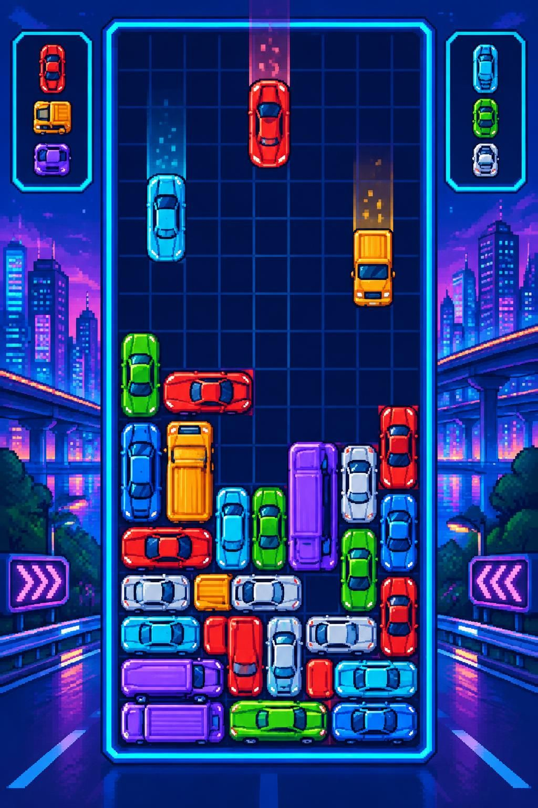

Si deseas distraerte un momento, has llegado al lugar ideal. Acá se ponen a prueba tus destrezas ¿estás listo?

Sopa de letras
Sopa de letras retro | Pon a prueba tu vista y tu rapidez en esta clásica sopa de letras. Encuentra todas las palabras escondidas entre las letras y disfruta de un desafío sencillo, divertido y con un toque retro.

Tetris, juego tipo arcade
Gira y acomoda las piezas mientras caen para completar las líneas y sumar puntos. Cada nivel aumenta el ritmo: ¿cuánto tiempo podrás mantener el tiempo despejado?

F1 | autos | retro
Combina la velocidad de las carreras con el retro de acomodar piezas. Conduce por una pista retro, esquiva obstáculos y organiza los bloques para completar líneas y avanzar.